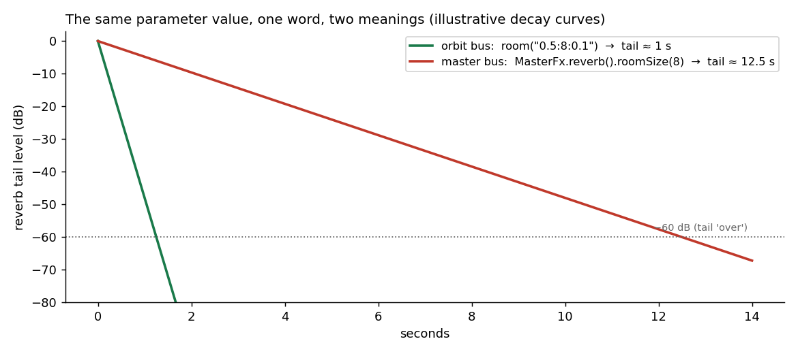

The Same Word Must Mean the Same Thing
An order-of-magnitude bug, and the DSL design principle it bought us.
1. The bug
While wiring klang's new master stage (the master(...) chain that rides the pattern like any voice), reverb landed
on both buses. Same effect, same parameter name, same value. The two doors, as they read today:
// per-orbit:
pattern.reverb(0.5, 8) // wet 0.5, size 8
// master bus:
master(Katalyst(k => k.reverb(wet = 0.5, size = 8)))
At the time, one of these produced a tail of about one second. The other, about twelve and a half.

Fig. 1: the same value, the same word, two rooms an order of magnitude apart.
The cause was archaeology, not malice: the sprudel side had inherited a divide-by-ten from its Strudel ancestry, the master side read the value raw. And a second knob that overrode the tail length outright existed on only one of the two buses. Nobody had lied; two honest pieces of code had simply never been introduced to each other.
2. Why this class of bug is harder to find than a crash
A crash tells you where it happened. A vocabulary divergence tells you nothing: it reads as your own bad taste. You set a reverb size of 8 on the master, it sounds like a parking garage, and the natural conclusion is "I chose a bad value," not "this word means something else here." The author adjusts by ear, ships a workaround, and the divergence burrows into every song written on top of it. By the time it's found, fixing the bug means changing the sound of shipped music, which is why the correction had to land together with the master stage, before anything relied on it.
Sound-design DSLs are unusually exposed to this class. The same concept genuinely lives in many places (a voice, an orbit bus, a master bus, an oscillator definition) and each surface grows its own code path. Without a counter-force, every parameter is one refactor away from dialect drift.
3. The principle
So it became a standing rule rather than a bugfix:
The same params must be available in the sprudel DSL, the Ignitor, the master etc., and they need to mean the same thing.
Three checks, applied per parameter, across every surface it could sensibly appear on: same name, same scale/units, same availability. The first parity audit caught more than the headline bug: two different words for the reverb send on the orbit and on the master, the reverb size on a 0 to 10 scale next to a second tail knob on 0 to 1, a delay knob with no slot in the delay's compound string, and two parameters that were stored, documented, and never read.
4. The rule for exceptions
The part that keeps the principle honest: some asymmetries are correct, and a parity rule with no way to record them just converts them into perpetual "fix" attempts.
The canonical one: the master bus's house limiter runs 5 ms of lookahead; an authored limiter() on a Katalyst chain
(the effect chain a song declares for a bus) runs zero by default, by design. A lookahead limiter delays the signal it
protects. On the summed master that delay is uniform and harmless; on a per-playback limiter it would shift that
playback late against every other one, a silent timing bug that reads as "my drums feel loose." Same word,
justifiably different behavior.
The rule: a deliberate exception is documented where it lives and pinned by a test. The values the two limiters share (threshold, ratio, knee, release) have one declaration that both sides read, and a spec asserts the divergence as a relation, the authored lookahead less than the house one, with the reasoning written next to the assertion, so the asymmetry is data, not folklore. Anyone who "unifies" the two timings turns the suite red and finds the reasoning there.
5. The takeaway
Parameter parity is the principle of least astonishment applied to a vocabulary. In a system where the same concept appears on four surfaces, the meaning of a word is an invariant to be tested, exactly like a filter's stability or a limiter's ceiling:
- same name, same scale, same availability, audited per effect;
- divergences either get fixed before anything ships on top of them, or get documented and asserted by a test;
- and when a parameter can't keep a promise on some surface, it shouldn't exist there at all.
An afternoon of fixing, and a line item in every review since. Cheap at ten times the price; this bug, fittingly, charged twelve and a half.